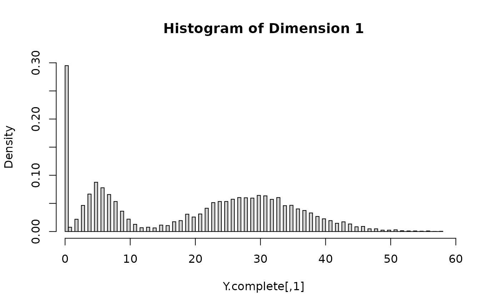
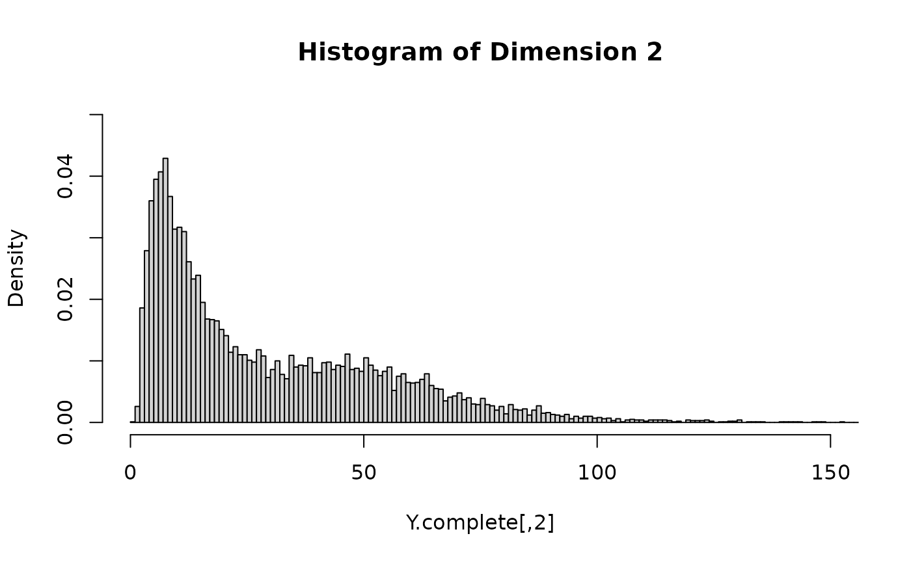

simulatedataset.RmdThis document contains the data generation process for the dataset LRMoEDemoData included in the LRMoE package. This also serves as an example of using the sim_dataset function included in the package.
Supose there is an auto-insurance company with two lines of business, with a total of 10,000 policies. The policyholder information includes sex (1 for Male and 0 for Female), driver’s age (with range 20~80), car age (with range 0~10), and region (1 for urban and 0 for rural). We assume all covariates are uniformly and independently drawn at random.
set.seed(7777)
sample.size = 10000
intercept = rep(1, sample.size)
sex = rbinom(sample.size, 1, 0.5)
aged = runif(sample.size, 20, 80)
agec = runif(sample.size, 0, 10)
region = rbinom(sample.size, 1, 0.5)
X = matrix(data = c(intercept, sex, aged, agec, region),
nrow = sample.size, byrow = FALSE,
dimnames = list(NULL,
c("intercept", "sex", "agedriver", "agecar", "region")))For simplicity, we assume there are two latent risk classes: low (L) and high (H). The characteristics for the high-risk class are male, young age, old car age and urban region. This is specified by the following matrix of logit regression coefficients, where the second row represents the reference class.
n.comp = 2
alpha = matrix( c(-0.5, 1, -0.05, 0.10, 1.25,
0, 0, 0, 0, 0),
nrow = n.comp, byrow = TRUE)We consider a two-dimensional response: claim frequency from the first business line, and claim severity from the second business line. For demonstration purposes and for simplicity, we don’t consider the same business line to avoid the complication where zero frequency necessarily implies zero severity. The component distributions and their parameters are specified as follows.
dim.m = 2
comp_dist = matrix(c("poisson", "zigammacount",
"lognormal", "inversegaussian"),
nrow = dim.m, byrow = TRUE)
params_list = matrix( list(list(lambda = 6), list(p_zero = 0.2, m = 30, s = 0.5),
list(meanlog = 4, sdlog = 0.3), list(mean = 20, shape = 20)),
nrow = dim.m, byrow = TRUE)The LRMoE package includes a simulator. Given the covariates and parameters defined above, we can directly simulate a dataset.
Y.complete = LRMoE::sim_dataset(alpha = alpha, x = X,
comp_dist = comp_dist, params_list = params_list)The simulated values are plotted as follows. For each dimension of Y, the histogram is relatively well separated as two components. This is more or less done on purpose to demonstrate that the fitting procedure can identify the true model when it is known. In practice, we are usually less concerned of the underlying data generating distribution, as long as the LRMoE model provides a reasonable fit of data.

One distinct feature of LRMoE is dealing with data truncation and censoring, which is common in insurance contexts. Consequently, instead of one single number for each dimension d, a tuple (tl.d, yl.d, yu.d, tu.d) is required, where tl.d/tu.d are the lower/upper bounds of truncation, and yl.d/yu.d are the lower/upper bounds of censoring.
For illustration purposes, we assume the dataset is subject to the following truncation and censoring.
| Index | Y.complete[,1] |
Y.complete[,2] |
|---|---|---|
| 1-6000 | No truncation or censoring | No truncation or censoring |
| 6001-8000 | No truncation or censoring | Left Truncated at 5 |
| 8001-10000 | No truncation or censoring | Right Censored at 100 |
# First block: 1~6000
X.obs = X[1:6000,]
tl.1 = rep(0, 6000)
yl.1 = Y.complete[1:6000, 1]
yu.1 = Y.complete[1:6000, 1]
tu.1 = rep(Inf, 6000)
tl.2 = rep(0, 6000)
yl.2 = Y.complete[1:6000, 2]
yu.2 = Y.complete[1:6000, 2]
tu.2 = rep(Inf, 6000)
# Second block: 6001~8000
keep.idx = Y.complete[6001:8000,2] >= 5
keep.length = sum(keep.idx)
X.obs = rbind(X.obs, X[6001:8000,][keep.idx,])
tl.1 = c(tl.1, rep(0, keep.length))
yl.1 = c(yl.1, Y.complete[6001:8000, 1][keep.idx])
yu.1 = c(yu.1, Y.complete[6001:8000, 1][keep.idx])
tu.1 = c(tu.1, rep(Inf, keep.length))
y.temp = Y.complete[6001:8000, 2][keep.idx]
tl.2 = c(tl.2, rep(5, keep.length))
yl.2 = c(yl.2, Y.complete[6001:8000, 2][keep.idx])
yu.2 = c(yu.2, Y.complete[6001:8000, 2][keep.idx])
tu.2 = c(tu.2, rep(Inf, keep.length))
# Third block: 8001~10000
X.obs = rbind(X.obs, X[8001:10000,])
tl.1 = c(tl.1, rep(0, 2000))
yl.1 = c(yl.1, Y.complete[8001:10000, 1])
yu.1 = c(yu.1, Y.complete[8001:10000, 1])
tu.1 = c(tu.1, rep(Inf, 2000))
y.temp = Y.complete[8001:10000, 2]
censor.idx = which(y.temp>=100)
yl.temp = y.temp
yl.temp[censor.idx] = 100
yu.temp = y.temp
yu.temp[censor.idx] = Inf
tl.2 = c(tl.2, rep(0, 2000))
yl.2 = c(yl.2, yl.temp)
yu.2 = c(yu.2, yu.temp)
tu.2 = c(tu.2, rep(Inf, 2000))
# Put things together
Y.obs = matrix(c(tl.1, yl.1, yu.1, tu.1, tl.2, yl.2, yu.2, tu.2),
ncol = 8, byrow = FALSE,
dimnames = list(NULL,
c("tl.1", "yl.1", "yu.1", "tu.1",
"tl.2", "yl.2", "yu.2", "tu.2")))As a result of truncating Y.complete[,2], 172 rows are discarded, leaving 9842 observations available for model fitting. Sample data points are show below.
# No truncation, no censoring
Y.obs[1,]## tl.1 yl.1 yu.1 tu.1 tl.2 yl.2 yu.2 tu.2
## 0.00000 28.00000 28.00000 Inf 0.00000 14.83233 14.83233 Inf
# Y.2 is left-truncated
Y.obs[6003,]## tl.1 yl.1 yu.1 tu.1 tl.2 yl.2 yu.2 tu.2
## 0.00000 2.00000 2.00000 Inf 5.00000 67.87901 67.87901 Inf
# Y.2 is right-censored
Y.obs[7900,]## tl.1 yl.1 yu.1 tu.1 tl.2 yl.2 yu.2 tu.2
## 0 0 0 Inf 0 100 Inf InfWe will export both the complete and incomplete datasets to the LRMoE package.
Y = matrix(c(rep(0,10000), Y.complete[,1], Y.complete[,1], rep(Inf,10000),
rep(0,10000), Y.complete[,2], Y.complete[,2], rep(Inf,10000)),
ncol = 8, byrow = FALSE,
dimnames = list(NULL,
c("tl.1", "yl.1", "yu.1", "tu.1",
"tl.2", "yl.2", "yu.2", "tu.2")))
save(X, Y, X.obs, Y.obs, file = "LRMoEDemoData.rda")